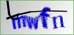

# -*- coding: UTF-8 -*_ from PIL import Image from pytesseract import *
im = Image.open('1.jpg') print(pytesseract.image_to_string(im));
四、优化程序，排除干扰
很多地方的验证码是有干扰的比如中间多一根横线，比如某教务处  首先可以灰度和二值化处理
1 2 3 4 5 6 7 8 9 10 11 12 13 14 15 16 17 18 19
#!usr/bin/env python # coding:utf-8
from pytesseract import * from PIL import Image
image = Image.open("4.jpg") image = image.convert('L') #转化为灰度图 threshold = 127#设定的二值化阈值 table = [] #table是设定的一个表，下面的for循环可以理解为一个规则，小于阈值的，就设定为0，大于阈值的，就设定为1 for i in range(256): if i < threshold: table.append(0) else: table.append(1)
image = image.point(table,'1') #对灰度图进行二值化处理，按照table的规则（也就是上面的for循环） result = pytesseract.image_to_string(image) #对去噪后的图片进行识别 print(result)
# 遍历图片中的每个点，除掉边缘 for i in range(1, rows-1): for j in range(1, cols-1): # pixel_set用来记录该店附近的黑色像素的数量 pixel_set = [] # 取该点的邻域为以该点为中心的九宫格 for m in range(i-1, i+2): for n in range(j-1, j+2): if image.getpixel((m, n)) != 1: # 1为白色,0位黑色 pixel_set.append(image.getpixel((m, n)))
# 如果该位置的九宫内的黑色数量小于等于4，则判断为噪声 if len(pixel_set) <= 4: change_pos.append((i,j))
# 对相应位置进行像素修改，将噪声处的像素置为1（白色） for pos in change_pos: image.putpixel(pos, 1)